Grafiken
Grafiken sind wie die Statsistik ein Hilfsmittel, um Trends und Muster in Daten besser zu erkennen und zu verstehen. Je nach Fragestellung, Anzahl und Typ von Variablen können verschiedene Darstellungstypen eingesetzt, und verschiedene Aspekte der analysierten Daten beleuchtet werden.
Zeitliche Aggregation
Wie für die Menu-Option Statistik müssen Parameter und die zeitliche Auflösung (unter aggregiere Messungen nach) ausgewählt werden. Die Basisdaten entsprechen einem Stunden-Mittelwert. Diese Werte können ohne weitere Aggregation angezeigt werden, wobei alle Details in der Grafik erhalten werden. Bei längeren Zeiträumen kann die Grafik jedoch überladen wirken, und die Extremwerte können die wichtigen Trends überdecken. Für diesen Fall empfiehlt es sich, eine höhere Zeitaggregation zu wählen, z.b. Tagesmittellwert, Wochenmittelwert, etc. Je grösser das Zeitintervall, das abgedeckt werden soll, und je grösser die Variation der Daten, desto grösser wird in der Regel die Zeitaggregation gewählt. Untenstehendes Beispiel zeigt den Unterschied von stündlicher und täglicher Aggregation in einem Zeitintervall von 6 Monaten. Zum Beispiel erscheint in den unten stehenden Grafiken in der stündlichen Aggregation ein Peak am 2. April, der in der täglichen Aggregation nicht auftritt, da offenbar die übrigen Tageswerte viel tiefer waren.
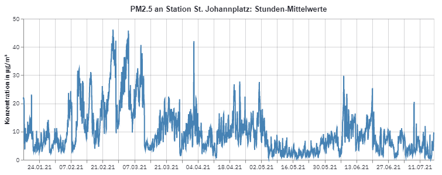
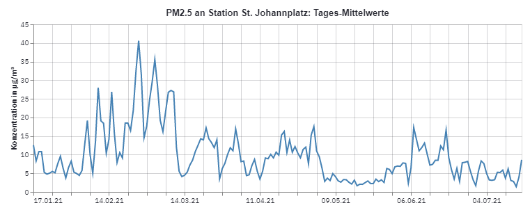
Für alle Aggregationen < 1 Jahr gibt grundsätzlich zwei Möglichkeiten der zeitlichen Aggregation. Zum Beispiel bei einer Aggregation nach Monat im Zeitinterval 2005-2020 kann eine Aggregation nach Monat bedeuten: - Wir aggregieren ausschliesslich nach Monat und erhalten 12 Monatswerte, welche Mittelwerte von Januar 2005-2020, Februar 2005-2020 etc. repräsentieren. Diese Darstellung zeigt den Verlauf einer Konzentration in einem Durchschnittsjahr auf. - Wir aggregieren nach Monat und Jahr und erhalten eine Zeitreihe von 20 x 12 Monatswerten. Der Effekt der Zeitaggregation ist in diesem Fall eine Vereinfachung und Glättung der Kurve gegenüber einer Darstellung der Rohwerte oder einer tieferen Aggregation.
Je nach Fragestellung ist die eine oder andere Aggregationsform günstiger. Im unten stenden Beispiel zeigt die Aggregation nur nach Monat zum Beispiel besser die Jahres-Saisonalität von Ozon. Die Aggregation nach Monat und Jahr gibt hingegeben mehr Details zu Langzeittrends, zum Beispiel scheinen sich die Intervalle mit tiefen Werten im Winter in den letzten Jahren zu verkürzen (Die Lücke zwischen den Peaks scheint sich zu verschmälern). Dieses Phänomen könnte mittels der rein monatlichen Aggregation nicht erkannt werden.
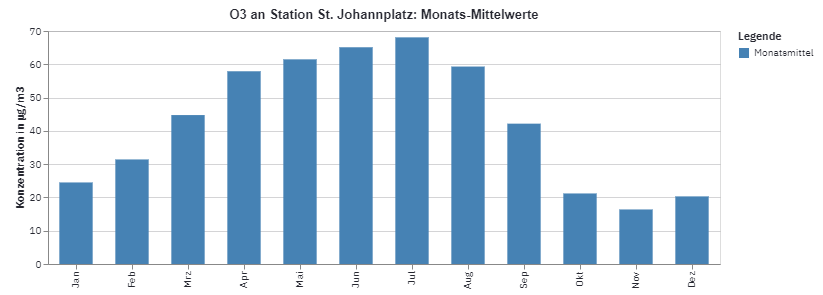
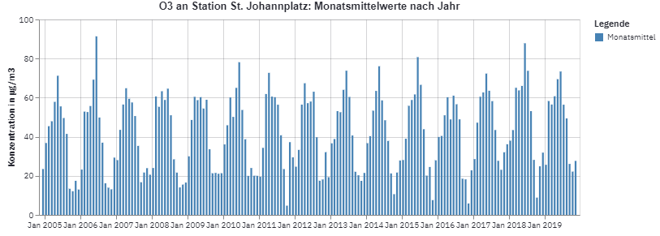
Grenzwert
Ausser für den Darstellungstyp Heatmap kann zudem der Grenzwert des untersuchten Parameters eingeblendet werden. Grenzwerte erscheinen aber nur bei zeitlich aggregierten Werten, für die der Grenzwert gilt. Dies bedeutet, dass zum Beispiel für PM10 bei einer Aggregation der Werte als Jahresmittel der Jahresgrenzwert erscheint, bei einer Aggregation nach Tag der tägliche Grenzwert, bei der Aggregation nach Monat erscheint hingegen kein Grenzwert. Je höher die zeitliche Aggregation, desto höher ist auch der Grenzwert. Es macht wenig Sinn, den Jahresmittelgrenzwert zusammen mit den stündlichen Messungen zu zeigen, da hier der Jahres-Grenzwert sehr oft überschritten wird und diese Überschreitungen nicht viel aussagen.
Im Fussbereich erscheint für jede Grafik eine kurze Beschreibung sowie eine Box, die sich per Mausklick öffnen lässt und die Daten der Grafik in Tabellenform darstellt. Unterhalb dieser Tabelle können die Daten im csv-Format (Komma-getrennte Textdatei) heruntergeladen werden.
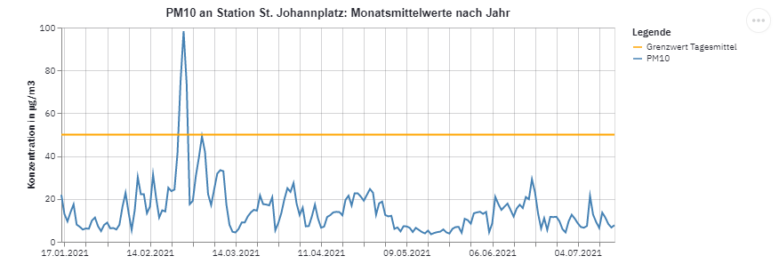
Alle Grafiken sind interaktiv, d.h. indem man mit der Maus über eine Linie fährt.
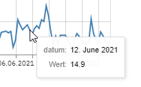
Mittels der ...-Schaltfläche in der rechten oberen Ecke des Plots kann die Grafik in verschiedenen Formaten gespeichert werden, wobei für die meisten User nur die Formate PNG und SVG relevant sein dürften.
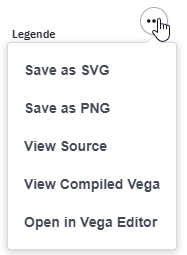
Liniendiagramm
Das Liniendiagramm eignet sich besonders gut für die Darstellung von Zeitreihen und wird bei Lufthygienedaten sehr häufig für die Darstellung von zeitlichen Verläufen von verwendet. Der Grenzwert kann als horizontale Linie in die Grafik integriert werden. Werte in der blauen Zeitlinie, welche diese Linie geben oben überschreiten, sind potentielle Verletzungen des Grenzwerts. Je nach Parameter darf ein Grenzwert eine gewisse Anzahl pro Jahr überschritten werden, z.B. darf das Stundenmittel von Ozon den Grenzwert maximal 3 mal pro Jahr überschreiten.
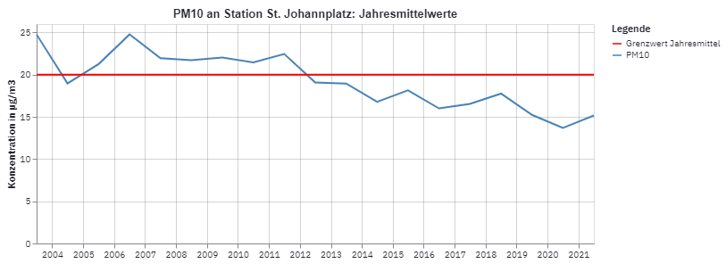
Als weitere Option kann die 90% Fläche angezeigt werden. Für jeden Punkt auf der Zeitreihe, welcher ein Mittelwert ist von vielen Stunden-Messwerten, wird das 5% und 95% Perzentil berechnet und die fläche zwischen diesne beiden Werten leicht transparent eingefärbt. Dieses zusätzliche Element erlaubt eien Abschäztung der Variation der Daten und der Extremwerte. In der untenstehenden Grafik ist eine abnehmende Tendenz ab 2010 für PM10 zu erkennen und gleichzeitig scheinen die Werte in späteren Jahren weniger zu variieren.
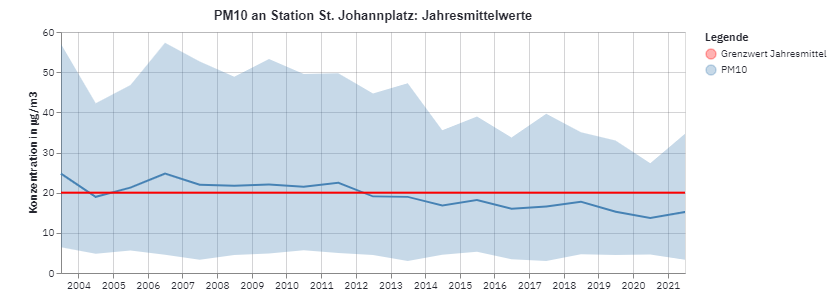
Säulendiagramm
Die Darstellung im Säulendiagramm ist dem Liniendiagramm sehr ähnlich: es stellt jeden Mittelwert als vertikalen Balken dar. Im Unterschied zum Liniendiagramm ist für das Säulendiagramm eine Aggregations einer zeitlichen Auflösung über mehrere Jahre möglich. Die Aggregation Monat z.B. über die Jahre 2005-2020 berechnet für jeden der 12 Monate den Mittelwerte über alle Jahre. Sie erlaubt die Erstellung einer typischen Jahreskurve. So ist z.B. ersichtlich, dass auch langfristig Ozon einen klaren saisonalen Trend mit Maximalwerten im Sommer aufweist.
Die Aggregation Jahr-Monat hingegen aggregiert nur die Monatswerte in einem Jahr und gleicht so in der Darstellung dem Liniendiagramm. Die gleichen Daten und das gleiche Zeitintervall ergibt mit dieser zeitlichen Aggregation folgende Darstellung:
Boxplot (Kastengrafik)
Der Boxplot ist eine, für Statistiker beliebte Darstellung, denn er gibt einen guten Einblick in die statistische Verteilung des betrachteten Datensatzes. Der Boxplot wird wie folgt konstruiert, z.B. für die Aggregation der Werte nach Jahr. - Für jedes Jahr, wird Median, 25% und 75%, 1% und 99% Perzentile berechnet. - Für jedes Jahr wird ein Kasten gezeichnet mit 75% Perzentil als obere Grenze und 25% als untere Grenze, der Median wird als horizontale Line in der Box eingetragen. Die Box repräsentiert den Grossteil der Daten. Die Position des Medians in der Box zeigt zudem, ob die Vereteilung annährend symmetrisch ist: dies ist der Fall wenn der Median genau in der Mitte der Box liegt. Befindet sich der Median allerdings eher auf im unteren Bereich, dann sind die Daten linkssteil (bzw. rechtsschief). Liegt der Median dagegen eher im oberen Bereich, so sind die Daten rechtsteil (bzw. linksschief). - die vertikalen Linien (Whiskers) werden ausgehend vom 75% Perzentil bis zum 99% Perzentil und vom 25% Perzentil zum 1% Perzentil gezeichnet. Sie veranschaulichen die Streuung der Daten. Je näher sie sich um den Kasten bewegen, desto kleiner die Streuung. - Die Werte ausserhalb des 99% resp 1% Perzentils werden als offene Kreise oberhalb und unterhalb der Whisker dargestellt. Diese Messwerte sind Kandidaten für Ausreisser (outliers): Dies sind Werte, die potentiell nicht zur gleichen Grundgesamtheit der überigen Daten gehören. Es können sowohl tatsächlich auftretende Anomalien sein aber auch Messfehler oder Fehler in den Daten anzeigen. Generell zeigen die Kreise die Extremwerte in einem Datensatz auf.
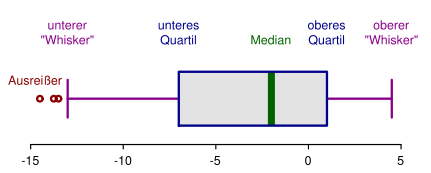 (Quelle)
Unten stehende Grafik zeigt ein Beispiel von PM10, mit einem Kasten pro Jahr (Aggreagationsstufe = Jahr). Der Median liegt in der Regel in der Mitte des Kastens, somit ist der Grossteil der Daten annährend symmetrisch verteilt. Abweichungen wie im 2004 kommen eher gegen den unteren Bereich vor, d.h. es besteht eine Tendenz zur Rechtsschiefe: Die Streuung ist gegen hohe Werte grösser als für tiefe Werte, was typisch ist für Konzentrationswerte, die im unteren Bereich eine physische Grenze bei 0 finden, geben oben aber unbegrenzt sind.
Beachte dass die Grenzwerte für den Jahresmittelwert definiert sind, der Boxplot aber den Median anzeigt. Da Median und Mittelwert oft nahe zusammenliegen ist die Darstellung des Grenzwerts trotzdem möglich, sie darf in diesem Fall aber nur zur ungefähren Referenz in Bezug zum Grenzwert gewertet werden. Zur genauen Darstellung von Grenzwert-Überschreitungen kann das Linien- oder das Säulendiagramm verwendet werden.
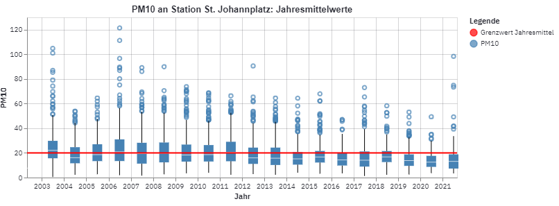 (Quelle)
Heatmap
Die Heatmap ist ein Diagramm zur Visualisierung von drei Parametern oder Dimensionen. Zwei kategorische Parameter werden für die Achsen X und Y verwendet, der dritte Parameter wird als eingefärbtes Quadrat für die entsprechenden XY-Werte dargestellt. In der unten stehenden Grafik wurden als XY Parameter Monat und Stunde gewählt und für jeden Stundenmittelwert wurde ein Farbton berechnet. Diese Visualisierung dient dazu, in einer großen Datenmenge intuitiv und schnell einen Überblick zu geben und besonders markante Werte und Trends leicht erkennbar zu machen. In unten stehender Darstellung ist zum Beispiel leicht zu erkennen, dass Ozon ein Maximum zwischen 13 und 15 Uhr annimmt und zwischen 6 und 7 Uhr ein Minimum. Erhöhte Werte treten zudem vor allem von den Monaten April bis September auf. Der Nachteil dieser Darstellung ist, dass man die als Farbton dargestellten Konzentration nur ungefähr mit der Farbskala abschätzen kann. In der Applikation hilft hier der Mouseover-Effekt, in dem die genauen Werte durch Überfahren des gewünschten Quadrats angezeigt wird. Verwendet man die Grafik jedoch in einem Bericht, so lässt sich die mittlere Konzentration für einen bestimmten Monat nur visuell abschätzen. Hier bietet es sich an, die Heatmap mit weiteren Grafiken zu kombinieren. Zum Beispiel kann ein Linien- oder Säulendiagrammen erstellt werden, welche die genauen Werte der Monate mit den extremsten Werten wiedergeben.
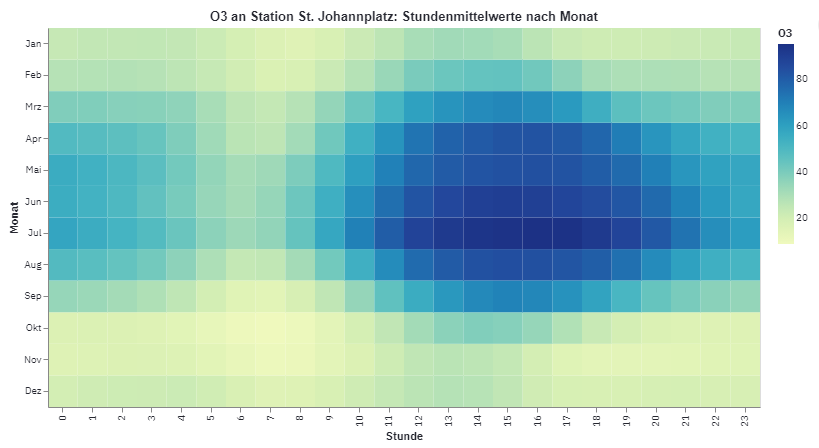